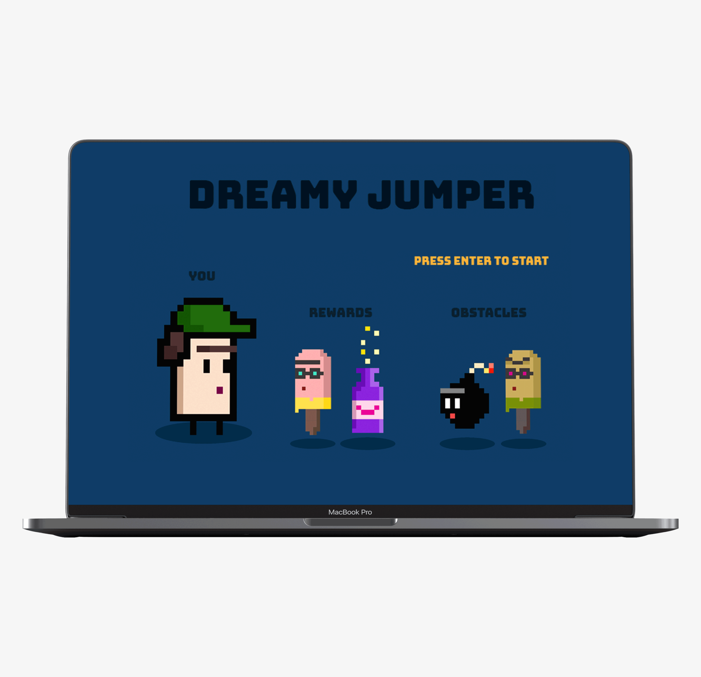
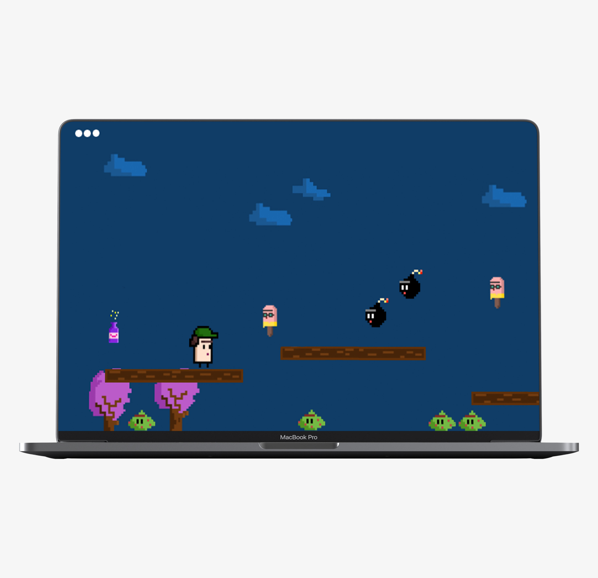

Dreamy Jumper
Dreamy Jumper

Dreamy Jumper is a browser videogame that I've developed while in college.
The development process started from sketching the characters design and scenic assets. I've then proceeded by creating obstacles and rewards. Later on I've digitalized them on Piskel App.
Dreamy Jumper is a browser videogame that I've developed while in college.
The development process started from sketching the characters design and scenic assets. I've then proceeded by creating obstacles and rewards. Later on I've digitalized them on Piskel App.

Dreamy Jumper is playable on desktop only, here.
Developed in JavaScript P5.
All arts and graphics are created using Piskel.
